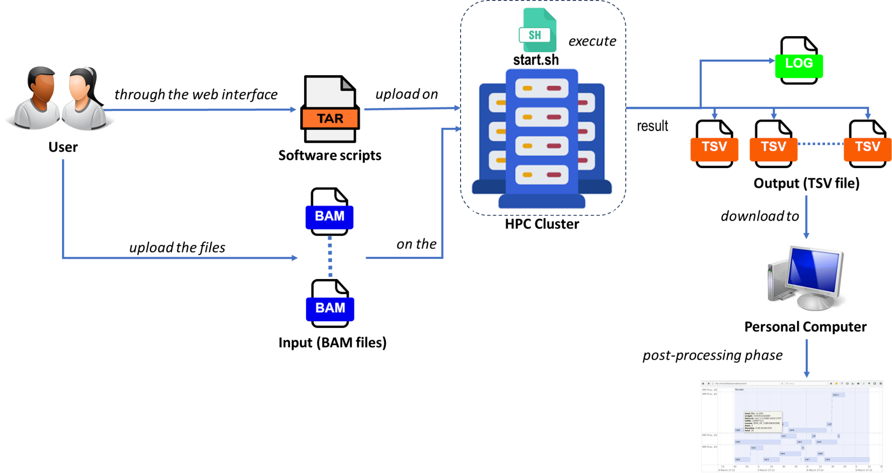

The logic behind the application can be summarized simply as follows: the user, who intends to perform the RNA-editing detection, provides HPC-REDItool with the input BAM files. These files, which would typically be the sequentially analyzed files used with REDItools-v3 software, contains the data of interest. In order to expedite the parallel detection process, HPC-REDItools employs a distributed approach where the BAM files within the input directory are distributed and analyzed separately and independently.
This parallelization strategy enables us to achieve significant reductions in detention time. By leveraging the power of distributed computing, HPC-REDItools harnesses the computational resources of an HPC cluster, allowing multiple analysis instances to be executed simultaneously.
This approach enables researchers to obtain comprehensive and accurate RNA-editing detection results within significantly shorter timeframes, enhancing their ability to analyze and understand the information encoded in the BAM files.
Figure: Workflow diagram of parallel processing of HPC-REDItools.
As an initial step, the master process collect and count the input files provided by the user, which contain all the necessary information for RNA-editing detection. Each process will then be assigned a BAM file on which to perform the analysis in the second phase.
After the Collecting phase, the subsequent step involves analyze the different BAMs contained within input directory. This analysis process is crucial for identifying RNA-editing events providing the user with a comprehensive overview of the data.
To accomplish this analysis, each process initiates an instance of the REDItools software. These software tools employ sophisticated algorithms to detect and find the RNA-editing events. By utilizing parallel processing, multiple instances of the software are launched simultaneously, allowing for faster and more efficient analysis on a large ammount of BAMs.
As the REDItools software runs, it generates detection results for each process or instance involved in the analysis. These results, one for each BAM file, represent the individual findings and matches discovered by each instance of the software.
Finally, after the completion of all computations, the master process update the log file with all information related to the analysis. After this phase, the results files will be available for the user in tmp directory in tsv format.